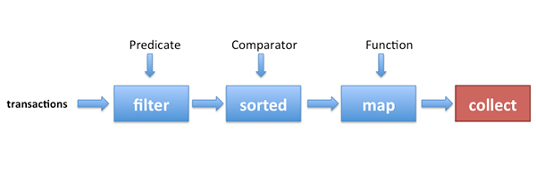

name: inverse layout: true class: center, middle, inverse --- <!-- Title --> #Java 8 Streams ##(internal iteration for collections) ###Karl Kirch @joekarl --- layout: false class: center, middle ##What are streams? ####A stream is a sequence of elements that can be lazily processed with sequential and parallel aggregate operations --- ##Collections vs Streams * Collections - Dynamic in memory data structure - Pre computed - Always fixed length - Require external iteration * Streams - Fixed data structure with external storage - Lazily computed - Can be infinite - Require internal iteration --- ##External vs Internal iteration * External - for, while, do, etc... - Code turns into how iteration occurs - You write the internals of your iterations - You have complete control - Procedural * Internal - map, reduce, filter, collect - Code cares about what's happening instead of how - You have no control - You supply a function to be executed during iteration - Functional --- layout: false class: center, middle ##Examples ####Sum of all positive transactions --- ##Pre Java 8 ```java class Transaction { double amount; long accountId; Date date; } List<Transaction> transactions = getTransactionsForAccount(id); double total = 0; for (Transaction t : transactions) { if (t.amount > 0) { total += t.amount; } } ``` --- ##Java 8 streams ```java class Transaction { double amount; long accountId; Date date; } double total = getTransactionsForAccount(id) .stream() .filter(t -> t.amount > 0) .mapToDouble(t -> return t.amount) .sum(); ``` --- ##Note about lambdas and functional interfaces * Stream operations take functional interfaces * Functional interfaces can be described as lamdba expressions ```java @FunctionalInterface interface Predicate<T> { boolean test(T t); } //Classic implementation Predicate<Shape> isShapeRedClassic = new Predicate<>(){ boolean test(Shape s) { return s.color == "red"; } }; //Lambda implementation Predicate<Shape> isShapeRedLamdba = (s -> s.color == "red"); ``` --- class: center, middle ##Something more complicated ####First 10 positive transactions between dates sorted by date converted to string as pounds --- ##Pre Java 8 ```java class Transaction { double amount; long accountId; Date date; } final Date startDate = new Date(/* */); final Date endDate = new Date(/* */); List<Transaction> transactions = getTransactionsForAccount(id); List<Transaction> filteredTransactions = new ArrayList<>(); for (Transaction t : transactions) { if (t.amount > 0 && startDate.before(t.date) && endDate.after(t.date)) { filteredTransactions.add(t); } } Collections.sort(filteredTransactions, new Comparator<Transaction>(){ //date sort public int compare(Transaction t1, Transaction t2) { return t1.date.compareTo(t2.date); } }); List<String> strAmounts = new ArrayList<>(); for (int i = 0; i < 10; ++i) { double pounds = filteredTransactions.get(i).amount * getExchangeRate(); strAmounts.add("£" + pounds); } ``` --- class: center, middle  --- ##Java 8 streams ```java class Transaction { double amount; long accountId; Date date; } final Date startDate = new Date(/* */); final Date endDate = new Date(/* */); List<String> strAmounts = getTransactionsForAccount(id) .stream() .filter(t -> t.amount > 0) //remove all negative transactions .filter(t -> startDate.before(t.date) && endDate.after(t.date)) //filter by date .sorted((t1, t2) -> t1.date.compareTo(t2.date)) //sort by date .limit(10) //limit to 10 transactions .mapToDouble(t -> return t.amount * getExchangeRate()) //convert to pounds .map(pounds -> return "£" + pounds) //convert to string .collect(Collectors.toList()); //convert to list ``` --- class: center, middle ##Intermediate vs. Terminal Stream Operations #### (or Preparation vs. Execution) --- ###Intermediate: Output is the modified stream * filter() * map() * sorted() * limit() ###Terminal: Output is something other than the stream * forEach() * reduce() * collect() * count() --- ##Intermediate vs. Terminal * Intermediate operations are not evaluated until a terminal operation is invoked * Intermediate = Lazy * Terminal = Eager --- ##Lazy Evaluation ```java List<Integer> numbers = Arrays.asList(1, 2, 3, 4, 5, 6, 7, 8); List<Integer> twoEvenSquares = numbers.stream() .filter(n -> { System.out.println("filtering " + n); return n % 2 == 0; }) .map(n -> { System.out.println("mapping " + n); return n * n; }) .limit(2) .collect(toList()); ``` ###Output <pre> filtering 1 filtering 2 mapping 2 filtering 3 filtering 4 mapping 4 4, 16 </pre> --- ##Implications of lazy evaluation * Streams can be infinite * Streams can be procedurally generated on the fly * Streams can be built on IO operations (NIO) * Streams can be passed to/returned from methods --- ##Infinite Streams ```java public static Stream<BigInteger> allPositiveEvenNumbers() { return Stream .iterate(BigInteger.ONE, i -> i.add(BigInteger.ONE)) .filter(i -> !i.testBit(0)); } allPositiveEvenNumbers() .limit(5) .forEach(bi -> System.out.println(bi)); ``` ###Output <pre> 2 4 6 8 10 </pre> --- ##Generator Streams ```java public Stream<String> quadkeyStream(int zoom) { long maxDimension = Double.valueOf(Math.pow(2, zoom)).longValue(); Stream<String> stream = LongStream.range(0, maxDimension * maxDimension) .mapToObj(n -> { return getQuadkeyAtXYZ(n / maxDimension, n % maxDimension, zoom); }); return stream; } quadkeyStream(23) .parallel() .limit(100) .forEach(qk -> System.out.println(qk)) ``` ###Output <pre> 00000000000000000000000 00000000000000000000001 00000000000000000000002 ... ... ... 00000000000000000100000 00000000000000000100001 00000000000000000100002 </pre> --- class: middle, center ##Stateless vs. Stateful Stream Operations --- ###Stateless: only need the current element * map() * filter() ###Stateful: must store extra info about state of stream * distinct() * sorted() * substream() * limit() --- class: middle, center ##Short Circuit Stream Operations #### (i.e. Don't process the entire stream is possible) --- ###Intermediate * limit() * substream() ###Terminal * anyMatch() * allMatch() * findFirst() * findAny() --- ##Stream Operations with Parallel Streams * Operations have indeterminate ordering outcomes ```java List<Integer> ints = Arrays.asList(34,5,26,37,2,326,7,8,54,2,23,35,3,78,6,7,2,2,32,6,7,8,53); Optional<Integer> x = ints.stream() .findAny(); System.out.println(x); ``` ##34 ```java List<Integer> ints = Arrays.asList(34,5,26,37,2,326,7,8,54,2,23,35,3,78,6,7,2,2,32,6,7,8,53); Optional<Integer> x = ints.parallelStream() .findAny(); System.out.println(x); ``` ##???? --- ##Real world uses * Data processing * Simple iteration of collections * Transformation of a collection of objects * Simplifying complex dynamic sorting --- ##Gotchas * Reusing streams (**DON'T**) * Accidentally creating infinite streams * Mixing up order of operations * Modifying the collection backing a stream * Blocking the common fork join pool * Using parallel streams where you shouldn't --- class: middle, center #Questions?